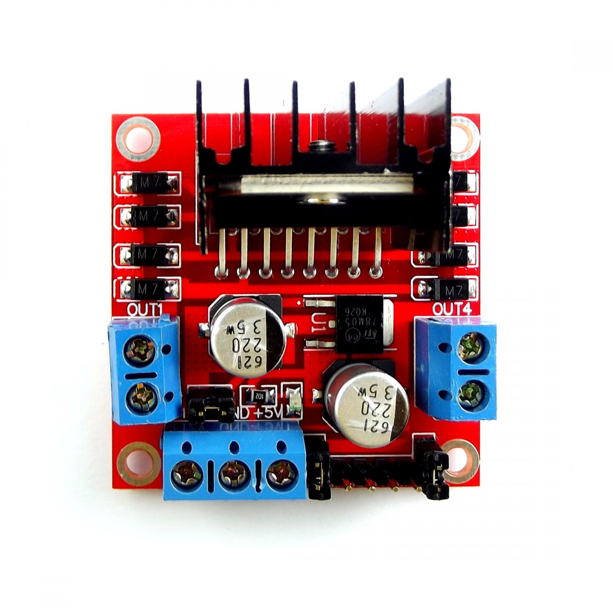
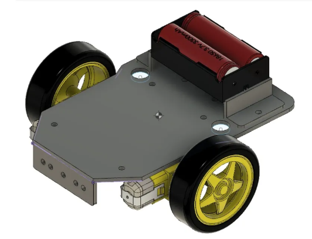
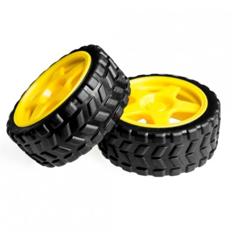

Motor DC
El motor de corriente continua (DC) es un actuador electromecánico que convierte energía eléctrica en movimiento mecánico rotacional. Su principio operativo consiste en el paso de corriente eléctrica por una bobina, generando un campo magnético que induce el giro del rotor. En robótica, se emplea para mover ruedas, engranajes y mecanismos, controlando desplazamiento y orientación. La dirección de giro varía según la polaridad aplicada a sus terminales.

Puente H L298N
El módulo L298N, o puente H, es un controlador para uno o dos motores DC, compatible con placas como Arduino, ESP32 o Raspberry Pi. Permite invertir el sentido de giro y regular la velocidad mediante señales PWM. Cuenta con pines específicos para alimentación, control de dirección y velocidad, facilitando el manejo eficiente y preciso de motores en proyectos electrónicos y robóticos.

Pines de alimentación:
- VCC (12V): Entrada de alimentación para motores, usualmente 9-12V según motor.
- GND: Tierra común para fuente y placa de control, para referencia compartida.
- 5V (opcional): Alimenta la lógica del módulo si el jumper 5V está activo; puede también alimentar Arduino si incluye regulador.
- Jumper ENA/ENB de 5V (puente): Con jumper, el regulador interno activa el motor; sin jumper, se controla velocidad vía PWM desde la placa.
Entradas de control (señales desde Arduino o ESP32):
IN1 y IN2:
- Controlan el motor A (primer motor).
- IN1=HIGH y IN2=LOW → Motor gira en un sentido.
- IN1=LOW y IN2=HIGH → Motor gira en sentido contrario.
- Ambas en LOW o HIGH → Motor se detiene.
IN3 y IN4:
Controlan el motor B (segundo motor), funcionan igual que IN1 e IN2.
ENA:
- Habilita el funcionamiento del motor A.
- Si se conecta a un pin PWM, permite variar la velocidad del motor.
ENB:
Habilita el funcionamiento del motor B, y también permite control de velocidad por PWM.
Salidas hacia los motores:
- OUT1 y OUT2: Conexión para el motor A.
- OUT3 y OUT4: Conexión para el motor B.
Chasis del carro
El chasis del carro robótico constituye la estructura física principal que soporta y fija todos los componentes del sistema, incluyendo motores, ruedas, batería, sensores, cables y placa controladora. Está fabricado comúnmente con materiales ligeros pero resistentes, como acrílico, aluminio o plástico ABS. Su diseño debe garantizar estabilidad mecánica, equilibrio dinámico y espacio suficiente para la distribución ordenada de los elementos, además de influir en la maniobrabilidad, seguridad estructural y presentación estética del robot.

Ruedas
Las ruedas son componentes mecánicos circulares que permiten la conversión del movimiento rotatorio de los motores en desplazamiento lineal del robot sobre una superficie. Se acoplan directamente a los ejes motrices y, dependiendo del diseño, el robot puede contar con dos, tres o cuatro ruedas, combinando ruedas motrices (accionadas por motores) con ruedas libres o de soporte para mantener la estabilidad. El tamaño, material y diseño de las ruedas influyen en la velocidad, tracción, dirección y estabilidad, por lo que su selección debe basarse en el tipo de terreno y los requerimientos funcionales del proyecto.
